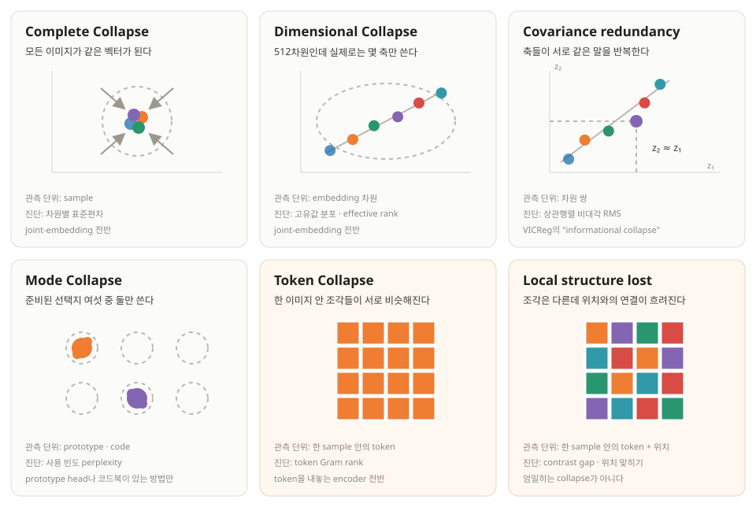

Self-Supervised Learning and Collapse
Update log
- 최초 게시.
인터넷에는 이미지·영상·오디오가 넘치지만, 그 안의 물체와 장면과 소리를 사람이 일일이 적어 둔 데이터는 드뭅니다. Self-supervised learning은 이 간극에서 시작합니다. 사람이 정답을 붙이는 대신 데이터 자체에서 학습 문제를 만들고, 그 문제를 풀며 쓸 만한 표현을 배우게 합니다.
문제를 만드는 법은 여러 가지입니다. 가린 픽셀·파형을 복원할 수도 있고, 같은 이미지·영상·오디오에서 잘라 낸 두 조각의 표현을 맞출 수도 있습니다. 겉보기에는 비슷한 사전학습이지만 두 문제의 성질은 다릅니다. 픽셀·파형은 모델이 무엇을 하든 그대로 남아 있는 반면, 표현은 모델과 함께 바뀝니다.
움직이는 표현을 정답으로 삼으면 뜻밖의 지름길이 열립니다. 모든 입력을 같은 벡터로 보내면 두 표현은 언제나 일치합니다. loss는 낮지만 남은 정보는 없습니다. 이 현상을 representation collapse라고 부릅니다.
그렇다고 "안 무너지게만 하면 된다"가 답은 아닙니다. 이 글에서는 self-supervised learning을 입력 view와 target view 사이에서 무엇을 보존하고 무엇을 압축할지 정하는 문제로 봅니다. 여기서 두 view는 증강한 이미지 두 장만 뜻하지 않습니다. reconstruction 계열의 corrupted input → clean target도 같은 데이터가 맡는 두 역할, 즉 두 view입니다. 붕괴 방지 장치는 모든 정보를 지켜 주지 않습니다. 압축이 모든 입력을 같은 값으로 보내는 자명한 해에서 끝나지 않도록 붙잡을 뿐입니다. 따라서 제약을 계산하는 level과 downstream task가 요구하는 level이 어긋나면, 전역 표현은 멀쩡해 보여도 국소 정보는 사라질 수 있습니다.
순서는 이렇습니다. 먼저 어떤 학습 문제에서 지름길이 생기는지 구분하고, 서로 다른 collapse의 유형과 진단법을 살펴봅니다. 그다음 SimCLR, BYOL, DINO, VICReg 같은 방법이 무엇을 보존하려 했는지 비교합니다. 마지막에는 이미지 단위 표현이 멀쩡해도 패치 단위 구조는 사라질 수 있다는, 덜 눈에 띄는 실패로 돌아옵니다.
범위를 미리 밝혀 둡니다. 여기서 정리하는 붕괴 유형은 배타적인 분류가 아니라 관측 단위가 서로 다른 실패들을 한자리에 모은 지도이고, 붕괴 방지 장치 다섯 가지도 전수 조사가 아니라 이 글에서 비교할 설계 패턴입니다.
Self-supervised learning이란 What is Self-Supervised Learning?
사람이 정답을 붙이지 않고, 데이터로부터 배우는 방법이다.
지도학습에서는 이미지와 사람이 붙인 라벨을 함께 보여 준다. 고양이 사진에 자동차라고 답하면 틀린다. 모든 이미지에 같은 답을 내는 모델도 대부분의 샘플에서 손해를 본다. 외부의 정답이 모델을 붙잡아 주는 셈이다.
라벨이 없는 데이터에는 이 정답표가 없다. 그렇다고 학습 신호까지 없는 것은 아니다. 이미지 일부를 가리고 원래 픽셀을 맞히게 하거나, 한 이미지를 두 번 변형한 뒤 같은 이미지에서 왔음을 알아보게 할 수 있다. 시간상 이웃한 비디오 프레임이나 문장의 다음 단어도 정답으로 쓸 수 있다. 정답을 사람이 적지 않았을 뿐, 데이터 안의 구조가 감독 신호를 제공한다. 이것이 self-supervised learning(SSL)의 기본 생각이다.
SSL 방법은 크게 두 질문에 답한다. 첫째, 무엇을 예측할 것인가? 픽셀이나 토큰처럼 관측된 값을 맞힐 수도 있고, 다른 view의 잠재 표현을 맞힐 수도 있다. 둘째, 어떤 정보가 두 view 사이에 같아야 하는가? crop과 색 변화에도 물체의 정체성은 남아야 하지만, 정확한 배경색까지 남길 필요는 없을 수 있다. 좋은 pretext task는 버릴 정보와 남길 정보를 이 두 선택으로 정한다.
표현을 직접 맞추는 방식이 매력적인 이유도 여기에 있다. 픽셀 복원은 잔디의 결이나 센서 노이즈까지 설명하느라 용량을 쓸 수 있다. 반면 표현 공간에서는 downstream task에 필요 없다고 판단한 세부를 버릴 여지가 있다. SimCLR, BYOL, DINO, VICReg, I-JEPA는 구현은 달라도 이 가능성을 활용한다.
하지만 정답까지 모델이 만들면 외부의 고정점이 사라진다. 같은 이미지에서 얻은 두 view를 \(x_1,x_2\), 인코더를 \(f_\theta\)라 하고 두 표현의 거리만 줄인다고 하자.
\[\mathcal{L}_{\text{match}}=\mathbb{E}\big[\lVert f_\theta(x_1)-f_\theta(x_2)\rVert^2\big]\]
우리가 원하는 해는 고양이끼리는 가깝고 자동차와는 구별되는 표현이다. 그러나 이 식만 놓고 보면 더 쉬운 해가 있다. 입력과 무관하게 \(f_\theta(x)=c\)로 두면 두 항은 언제나 같고 loss는 0이 된다. 학습 문제는 풀었지만 데이터에 관한 정보는 하나도 남지 않는다.
이 상수 해를 trivial solution, 학습된 표현이 그 해 또는 그와 비슷한 저차원 상태로 향하는 현상을 representation collapse라고 부른다. 목적함수에 상수 해가 존재하는 것, 최적화가 실제로 그곳에 도달하는 것, downstream 성능이 낮은 것은 같은 문장이 아니다. 이후에는 이 셋을 구분해서 사용한다.
물론 실제 방법은 위의 거리 항만 사용하지 않는다. SimCLR에는 negative sample이 있고, BYOL에는 stop-gradient가 있으며, VICReg에는 분산 항이 있다. 어떤 방법은 trivial solution을 목적함수에서 제거하고, 어떤 방법은 해를 남겨 둔 채 최적화가 그쪽으로 흐르지 않도록 만든다. collapse를 이해한다는 것은 이 추가 장치가 보존하는 정보가 무엇인지 묻는 일이다.
이 글에서 SSL 알고리즘의 이름은 출발점이 아니다. 어떤 target을 만들고, 어떤 collapse를, 어느 수준에서 막는가를 먼저 본다.
붕괴는 언제 일어나는가 When Does Collapse Occur?
target이 고정돼 있는지, 모델과 함께 움직이는지에 따라 collapse의 형태가 달라진다.
여기서 target은 모델이 맞혀야 하는 답 \(y_i\)다. 데이터 포인트 \(x_i\)는 입력이고, target \(y_i\)는 그 입력에 대응하는 답이다. 이 절에서는 target을 원본 관측값, 고정된 cluster index, 학습되는 cluster index, 고정된 latent, 학습되는 latent로 나눠 본다. Cluster 방법이 soft assignment를 쓰면 하나의 index 대신 여러 cluster에 대한 확률분포가 target이 된다.
가려진 부분의 픽셀 값을 맞히는 문제를 생각해 보자. 모델이 모든 위치에서 같은 색을 출력하면 서로 다른 원본 픽셀을 정확히 맞힐 수 없다. 픽셀은 학습 중에 모델과 함께 상수로 변하지 않으므로, 두 branch가 같은 상수로 가서 loss를 0으로 만드는 joint-embedding식 지름길은 닫혀 있다. 고정 tokenizer의 code나 얼린 encoder가 만든 비상수 target도 같은 이유로 기준점 역할을 한다. 물론 context가 target 정보를 전혀 주지 않는 극단에서는 평균값 같은 상수 예측이 최선일 수 있으므로, 여기서 배제되는 것은 어디까지나 0-loss 공동 붕괴다.
| Target \(y_i\) | 학습 중 상태 | 상수 output으로 loss 0이 가능한가? |
|---|---|---|
| 원본 픽셀·파형 (MAE의 픽셀) | 고정 | 불가능 (샘플·위치마다 답이 다르다) |
| 고정된 cluster index (BEiT·BEST-RQ의 code index) | 고정 | 불가능 (서로 다른 index가 실제로 쓰인다는 조건) |
| 학습되는 cluster index (SwAV의 assignment, DINO의 prototype 분포) | 학습됨 | 가능 (모두 같은 cluster를 고를 수 있다) |
| 고정된 latent \(h_{\bar\phi}(x_i)\), frozen encoder의 출력 | 고정 | 불가능 (샘플마다 latent가 다르다는 조건) |
| 학습되는 latent \(h_\xi(x_i^{(2)})\), 다른 view encoder의 출력 | 학습됨 | 가능 (두 branch가 같은 상수가 될 수 있다) |
마지막 열을 "방지 장치가 필요 없다"로 읽으면 너무 나간 것이다. 고정 target이 배제하는 것은 이 matching loss의 상수 출력이다. 강한 decoder나 우회 경로 때문에 encoder가 덜 쓰일 수 있고, 학습되는 tokenizer나 codebook은 일부 code만 쓸 수 있다. 복원에는 충분하지만 semantic task에는 부족한 표현, 지나치게 국소적인 shortcut도 여전히 가능하다.
반대로 target encoder도 함께 학습하면 target 자체가 상수로 변할 수 있다. predictor와 target이 함께 움직이므로 둘이 같은 상수에 합의하는 순간 matching loss가 사라진다. 여기에서 collapse가 목적함수의 문제로 등장한다.
그럼에도 학습되는 표현을 target으로 쓰는 이유는 픽셀 수준의 불확실성을 모두 설명하지 않아도 되기 때문이다. 나뭇잎의 정확한 위치나 잔디의 질감은 한 crop만 보고 예측하기 어렵고 의미 표현에도 불필요할 수 있다. JEPA가 픽셀 대신 representation space에서 예측하자고 제안하는 배경이다. 선택적으로 정보를 버릴 수 있다는 장점과, 모든 정보를 버릴 수 있다는 위험은 같은 설계에서 나온다.
MAE는 픽셀을, BEiT는 tokenizer가 만든 discrete token을, BEST-RQ는 고정 랜덤 코드북의 index를 예측한다. 이 target들은 학습되는 encoder와 함께 상수로 움직이지 않는다. 따라서 이 절에서 말한 상수 target으로의 공동 붕괴를 막기 위한 장치는 필요하지 않다. 그렇다고 이 방법들이 정보 병목이나 낮은 품질의 표현 같은 다른 실패에서 자유롭다는 뜻은 아니다.
정보이론의 언어로 보면 두 view를 만드는 순간 하나의 가정이 들어간다. 두 view에 공통으로 남은 정보는 이후 task에도 충분하고, 한 view에만 남은 정보는 버려도 된다는 가정이다. Shwartz-Ziv와 LeCun(2023)의 review는 이를 Multiview assumption이라 부르고, task \(Y\)에 대해 \(I(Y;X_2\mid X_1)\)과 \(I(Y;X_1\mid X_2)\)가 모두 작다는 조건으로 적는다. 즉 한쪽 view만 봐도 task에 필요한 정보는 거의 다 있다는 뜻이다. 이 가정이 맞으면 view-specific detail을 압축하는 것이 바람직한 invariance가 될 수 있다.
가정이 깨지는 경우도 같은 review가 짚는다. crop이나 색 변환이 label을 바꾸거나, 여러 downstream task가 서로 다른 정보를 요구하면 공유되지 않은 쪽에도 task-relevant information이 들어 있다. 그때의 압축은 complete collapse를 겪지 않고도 표현을 불충분하게 만든다. 그래서 "압축 = collapse"도 아니고 "많이 퍼진 표현 = 좋은 표현"도 아니다. 이 글에서 collapse 지표와 downstream 성능을 끝까지 따로 다루는 이유가 여기에 있다.
결국 "얼마나 압축해야 좋은가"에는 task와 무관한 답이 없다. 모든 정보를 지운 극단은 분명히 피해야 하지만, 공통되지 않은 정보를 얼마나 남길지는 augmentation과 downstream task의 관계가 정한다.
\[\begin{aligned} \text{고정 target: } &\min_\theta \mathbb{E}\lVert g(f_\theta(x)) - y(x)\rVert^2, \quad y \text{는 움직이지 않는다} \\ \text{함께 학습되는 target: } &\min_\theta \mathbb{E}\lVert f_\theta(x_1) - f_\theta(x_2)\rVert^2 \;\;\Rightarrow\;\; f_\theta \equiv c \text{ 에서 } 0 \end{aligned}\]
재생을 누르면 같은 초기 model output이 두 objective로 학습된다. 왼쪽은 샘플마다 다른 고정 target을 따라가므로 output을 모두 한 점으로 만들 수 없다. 오른쪽은 bare matching loss가 허용하는 여러 해 가운데, shared encoder의 scale이 줄어 두 view가 함께 상수 해로 가는 가능한 붕괴 경로를 보여 준다. 이 loss가 언제나 그 경로를 택한다는 뜻은 아니다.
model output 맞혀야 할 target선으로 이은 한 쌍 = 같은 샘플·위치
고정된 cluster index: BEiT·BEST-RQ의 code index
고정된 latent: frozen encoder의 출력
학습되는 latent: BYOL·SimSiam의 다른 view latent, I-JEPA의 target-block latent
점의 2차원 위치는 output/target 공간을 도식화한 것이다. 입력 데이터의 좌표도, cluster 중심도 아니다. 왼쪽 target은 관측값·code·latent 중 무엇이든 될 수 있지만 학습 중에는 고정되고, 오른쪽 target은 다른 view를 처리하는 encoder가 바뀌면서 함께 움직인다.
붕괴와 그 이웃한 실패들 Types of Collapse and Related Failures
관측 단위가 서로 다른 여섯 가지 실패를 한자리에 모아 비교한다.
먼저 단어 두 개. 요즘 모델은 이미지 한 장을 통째로 보지 않고 작은 patch로 잘라서 본다. patch 하나에 벡터 하나가 대응하는데, 이 벡터를 token이라 부른다. 이미지 한 장이 보통 수십~수백 개의 token이 되고, 그것들을 평균 내면 이미지 한 장을 요약하는 벡터 하나가 나온다. 이걸 pooled vector라고 하자. 아래 표의 "level"은 이미지들 사이의 이야기인지 한 이미지 안의 이야기인지를 가리킨다.
| Name | What collapses | Unit of observation | Diagnostic statistic | Applicable models |
|---|---|---|---|---|
| complete collapse | 모든 이미지가 같은 벡터가 된다 | sample | 차원별 표준편차 | joint-embedding 전반 |
| dimensional collapse | 표현이 낮은 차원에만 갇힌다 (512차원인데 실제로는 3차원만 쓰는 식) | embedding 차원 | 고유값 분포 · effective rank | joint-embedding 전반 |
| covariance redundancy VICReg의 "informational collapse" | 차원들이 서로 같은 말을 반복한다 | 차원 쌍 | 상관행렬 비대각 RMS | joint-embedding 전반 |
| mode collapse | 준비된 prototype 중 몇 개만 계속 쓴다 | prototype · code | 사용 빈도 perplexity | prototype head나 코드북이 있는 방법만 |
| token collapse 관련 현상: rank loss · over-smoothing | 한 이미지 안의 patch들이 서로 비슷해지거나 낮은 차원에 갇힌다 | 한 sample 안의 token | token Gram spectrum · pairwise similarity | token을 내놓는 encoder 전반 (SSL·지도 무관) |
| local structure lost | 가까운 patch와 먼 patch가 구별되지 않는다 (엄밀히는 collapse가 아니다. 아래 참고) | 한 sample 안의 token + 위치 | contrast gap · position probe | 위치별 조건이 없거나, 있어도 일부 위치에만 닿는 목적함수 |
세 번째 줄은 이름을 바꿔 적었다. Bardes et al.의 VICReg은 축들이 함께 움직이는 상태를 informational collapse라고 부르지만, 이 글에서는 더 좁은 뜻의 covariance redundancy라고 쓴다. 상관행렬의 비대각 항이 0이라는 사실만으로 downstream task에 필요한 정보가 남았다고 말할 수는 없기 때문이다.
이름은 대부분 문헌에서 왔다. Hua et al.(2021)이 앞의 둘을 갈라 부르면서 dimensional collapse가 흔히 간과되는 별개의 상태임을 지적했고, Jing et al.(2022)이 그것이 contrastive 방법에서도 일어난다는 것을 보였다. 아래 두 줄은 SSL 바깥에도 이름이 있다. transformer의 rank collapse(Dong et al., 2021)와 깊은 ViT의 over-smoothing이다. 결이 조금 다르지만 같이 볼 것이 하나 더 있다. 정보가 적은 일부 patch가 전역 정보를 모으는 자리로 재활용된다는 artifact token 보고(Darcet et al., 2023)다. 뒤에서 볼 V-JEPA 2.1의 진단이 이것과 같은 모양이다.
여기서 조심할 것이 있다. patch들이 서로 비슷해지는 현상은 목적함수와 상관없이 일어날 수도 있다. attention을 깊게 쌓으면 그렇게 된다는 이야기가 있기 때문이다. 다만 근거를 부풀리면 안 된다. Dong et al.의 정리는 skip connection도 MLP도 없는 순수 attention에 대한 것이고, 논문 자신의 결론은 오히려 "skip connections play a key role in mitigating rank collapse"다. 실제 ViT는 정리가 다루는 경우가 아니다. 그래도 깊은 지도학습 ViT에서 patch들이 서로 비슷해진다는 보고는 따로 있다(Gong et al., 2021; DeepViT). 그러니 아래 이야기는 "SSL 목적함수가 원인이다"가 아니라 "SSL 목적함수 아래에서 관측된다"까지만 말할 수 있다.
여섯 줄은 서로 겹치기도 하고, 애초에 같은 층위의 개념도 아니다. dimensional collapse(쓰는 차원이 줄어듦)과 covariance redundancy(차원끼리 같은 말을 함)는 대개 같은 사건의 두 가지 서술이다. mode collapse는 표현 자체가 아니라 prototype을 고르는 head의 실패라서, 그런 head가 없는 VICReg이나 BYOL에는 정의되지도 않는다. local structure lost는 엄밀히 말해 collapse가 아니다. patch들이 서로 충분히 다르면서 위치와의 연결만 흐려질 수 있기 때문이다. 그래도 같은 표에 둔 것은 진단을 걸어야 할 지점이 같아서지 같은 종류의 실패라서가 아니다.
실무에서 기억할 것은 두 가지다. complete collapse는 현대 recipe에서 비교적 쉽게 드러나는 편이고, 정규화하지 않은 차원별 표준편차로도 빠르게 확인할 수 있다(측정상의 함정은 다음 절에서 짚는다). 반면 부분적인 차원 손실이나 국소 구조 손실은 훨씬 조용하다. 또 위 네 줄은 이미지들 사이를, 아래 두 줄은 한 이미지 안을 본다. 한 이미지 안의 patch가 서로 비슷해져도 이미지별 pooled vector는 서로 다를 수 있으므로, 위쪽 지표만 보면 이 실패를 놓칠 수 있다.
"dense feature가 약하다"는 증상이 대개 아래 두 줄이다. 여기서 dense feature란 이미지 한 장에 벡터 하나가 아니라 위치마다 벡터 하나가 필요한 작업(segmentation, 깊이 추정, 프레임 단위 예측)에 쓰는 표현이다. 분류 정확도만 보고 있으면 이 실패는 끝까지 안 보인다.
아래 도해는 여섯 상태의 전형적인 모양만 비교한다. 배경이 따뜻한 색인 두 칸이 한 이미지 안의 이야기이고(위 표에서 강조한 두 줄과 같다), 나머지 넷은 이미지들 사이의 이야기다. 실제 고차원 표현은 2차원 그림보다 복잡하므로, 이 도해는 진단 기준이 아니라 개념 지도다.

표현 붕괴를 측정하는 법 Measuring Collapse
어느 종류의 붕괴가 진행 중인지 학습 도중에 알아채기 위한 지표들이다.
먼저 두 질문을 갈라 두자. 1) 표현이 자명하거나 저차원 상태로 무너졌는가? 2) downstream task에 필요한 정보가 남아 있는가? 아래 지표는 전부 질문 1)을 위한 것이고, 그래서 label 없이도 학습 도중에 잴 수 있다. 질문 2)는 다르다. 앞의 When Does Collapse Occur? 절의 Multiview assumption이 말하듯 "무엇이 필요한 정보인가"는 task가 정하는 것이라, task나 probe 또는 명시적인 가정 없이는 답이 나오지 않는다. 두 질문을 한 지표로 답하려는 순간 퍼져 있으면 좋은 표현이라는 오해가 시작된다. 노이즈나 위치 코드만으로도 rank는 얼마든지 올라간다.
세 단어만 미리 풀어두자. effective rank는 "512차원 중 실제로 몇 차원을 쓰고 있나"를 세는 값이다(공분산의 고유값 분포를 정규화한 뒤 엔트로피로 요약해 지수화한 값이다). Gram matrix는 한 이미지 안 patch들끼리 서로 얼마나 닮았는지를 전부 적어 놓은 표다. patch들이 뭉치면 이 표의 rank가 떨어진다. perplexity는 "준비된 prototype 중 실질적으로 몇 개를 쓰고 있나"를 세는 값이다.
| What it measures | Target | Failure caught |
|---|---|---|
| 차원별 표준편차의 중앙값과 하위 5% | pooled | complete collapse (재는 방식에 따라 다르다. 아래 참고) |
| effective rank와 고유값 분포 | pooled | dimensional collapse |
| 상관행렬에서 대각선을 뺀 값들의 RMS | pooled | covariance redundancy |
| 벡터 길이의 평균과 변동계수 | pooled | 길이가 폭주하거나 사라지는 것 |
| 서로 얼마나 고르게 퍼졌는지(uniformity) | pooled | 한 점은 아닌데 좁은 구석에 몰림 |
| token Gram rank | token | token collapse (cosine 평균과 달리 부호에는 속지 않는다. 다만 위치 코드만으로도 올라간다) |
| patch끼리의 cosine 평균과 상위 5% | token | token collapse (평균만 보면 놓친다. 아래 참고) |
| contrast gap: 붙어 있는 patch와 멀리 있는 patch의 유사도 차이 | token | local structure lost |
| position probe: patch 벡터만 보고 그 patch가 몇 번 칸에서 왔는지 맞히기 | token | local structure lost |
| 한 이미지 안 분산 ÷ 이미지들 사이 분산 | both | 두 level이 어긋났는지 자체 |
| teacher 출력의 표준편차와 흔들림 | 천천히 따라오는 target | target 쪽이 먼저 무너지는 경우 |
| prototype 사용 빈도와 perplexity | prototype head 또는 codebook | mode collapse |
표준편차는 어디서 재느냐에 따라 다른 말을 한다. 벡터를 길이 1로 정규화한 뒤 재면 방향만 보게 되어, 벡터가 통째로 짧아지는 붕괴를 놓친다. 정규화 없이 재면 길이까지 보지만 방법마다 scale이 달라 서로 비교하기 어려워진다. 둘 다 남겨 두고, 얼마나 무너졌는지는 rank 쪽으로 읽는 편이 안전하다.
effective rank를 512로 나눌 때의 함정. batch 크기 \(n\)이 차원 수 \(d\)보다 작으면 살아 있을 수 있는 고유값 개수 자체가 \(\min(n-1,d)\)개로 묶인다. 완벽하게 퍼져 있어도 최댓값이 \((n-1)/d<1\)에 그친다는 뜻이다. \(n \ge d\)일 때만 1을 기준으로 읽고, 아니면 batch 크기가 같은 것끼리만 비교하자.
patch끼리 cosine 평균은 부호에 속는다. patch들이 하나의 축 위에 부호만 섞여 놓인 경우를 생각해 보자. 절반은 \(+v\), 절반은 \(-v\)다. 쌍마다 cosine이 +1 아니면 −1이라 평균은 0 근처가 된다. 아주 건강해 보인다. 그런데 실제로는 patch들이 1차원 직선 위에 다 놓여 있고, Gram rank는 바닥이다. 이미 무너졌는데 평균은 아무 말도 해주지 않는다. 그래서 기본 지표는 Gram rank여야 하고, cosine을 보려면 반드시 상위 백분위와 함께 봐야 한다(위 경우 상위 5%는 1에 붙어 있다).
Gram rank도 만능은 아니다. patch들이 서로 다르기만 하고 그 차이가 위치와 무관하게 뒤섞여 있을 수도 있다. Gram rank는 높은데 "왼쪽 위와 오른쪽 아래"의 구별은 이미 사라진 상태다. 그래서 위치를 아는 지표를 둘 더 뒀다. 붙어 있는 patch와 멀리 있는 patch의 유사도 차이(contrast gap), 그리고 patch 벡터 하나만 보고 그게 격자의 몇 번 칸이었는지 맞히기다.
다만 position probe에는 큰 함정이 있다. ViT는 위치 정보를 입력 단계에서 더해 주기 때문에, 위치는 어느 정도 공짜로 남는다. 표현이 완전히 무너진 모델에서도 이 값이 높게 나올 수 있다는 뜻이다. 이 지표가 재는 건 dense 성능이 아니라 "patch가 자기가 어디 있었는지 아직 기억하는가"다. 절대값을 성능으로 읽지 말고, 같은 조건끼리의 차이를, 그것도 한 점이 아니라 곡선 전체로 봐야 한다.
기준선은 미리 정하지 말자. 방법마다 임베딩 scale 자체가 달라서 "0.3 아래면 위험" 같은 보편 기준이 없다. 학습 초반 안정 구간의 값 대비 급락·급등으로 경보를 거는 편이 맞다. 시작부터 무너지는 경우엔 안정 구간이 없으니, 학습 전 랜덤 초기화 상태에서 잰 값을 기준선으로 쓰면 된다.
재는 행위가 학습을 바꾸면 안 된다. 어떤 loss에도 더하지 않는 것은 물론이고, learning rate 조절이나 best checkpoint 고르기에도 쓰지 않는다. gradient가 흐르지 않게 계산하고, 학습 forward 안에서 매 step 돌리지도 않는다. SVD 같은 것을 매 step 돌리면 조건마다 학습 속도가 달라진다. 마지막으로 난수를 따로 써야 한다. 데이터 순서와 masking에 쓰는 난수를 축내면 재현이 깨진다.
마지막으로 첫 문단의 두 질문으로 돌아가자. 위 지표는 전부 질문 1)의 도구다. Gram rank가 높다고 segmentation이 잘 되는 것은 아니다. 붕괴하지 않았다는 것은 쓸 만한 표현의 필요조건이지 충분조건이 아니다. 이 간극을 정면으로 다룬 것이 Li, Efros, Pathak(2022)인데, 부분적으로만 무너진 경우 지표와 성능이 나란히 움직이지 않는다고 보고한다.
질문 2)를 재려면 결국 task 쪽 도구가 필요하다. linear probe, k-NN, 그리고 dense가 걱정이면 frozen feature 위의 segmentation probe가 출발점이다. 이 셋도 서로 다른 답을 줄 수 있다. 어느 pretraining이 linear probe에서 이기고 fine-tuning에서는 지는 순위 역전도 가능하다. 그래서 실무에서는 붕괴 지표와 task probe를 함께 보는 편이 안전하다.
1. Negative sample로 표현을 분리하기 Negative Samples
"다른 사진과는 달라야 한다"는 조건을 loss에 직접 적는 방법이다.
이제부터 다섯 절은 "설계 패턴" 다섯 개다. 전수 조사가 아니고, 서로 배타적이지도 않다. 실제 방법은 대개 여러 장치를 겹쳐 쓴다. DINO는 stop-gradient/EMA와 centering·sharpening을 함께 쓰고, DINOv2는 거기에 iBOT와 KoLeo를 더한다. 같은 칸에 넣은 방법끼리도 작동 원리가 완전히 같지는 않다(Barlow Twins와 VICReg이 그렇다). 다섯으로 자른 기준은 "서로 다른 종류의 답을 하나씩 대표한다"이지 분류의 완결성이 아니다. 뒤의 표에서 여기 들어가지 않은 장치를 최소 둘 더 센다.
다섯 절 옆에 각 장치의 의사코드를 붙여 두었다. 읽는 요령은 tensor의 shape을 먼저 보는 것이다. 인코더가 내놓는 것은 언제나 patch token \((N,P,d)\)인데, Algorithm 1–7은 전부 그 \(P\)축을 pooling으로 접은 뒤에 loss를 건다. loss 어디에도 \(P\)가 나타나지 않으면 그 장치는 pooled embedding에 걸린 것이고, 한 이미지 안에서 무슨 일이 일어나는지는 보지 않는다. 뒤의 token 수준 절에 놓인 Algorithm 8–10만 \(P\)를 끝까지 남기는데, 두 쪽을 나란히 놓고 보는 것이 이 글이 말하는 level의 가장 짧은 정의다.
발상은 간단하다. 같은 사진의 두 view는 서로 당기고, 배치 안의 다른 사진들과는 밀어낸다. 전부 같은 벡터로 가려는 순간 밀어내는 힘이 반대로 작용하니, 부정행위 답안이 애초에 손해가 된다. CPC가 도입한 InfoNCE가 이 형태이고, SimCLR과 MoCo가 이를 이미지에서 크게 성공시켰다.
\[\mathcal{L}_i=-\log\frac{\exp\!\big(\mathrm{sim}(z_i,z_i^+)/\tau\big)}{\sum_{k\neq i}\exp\!\big(\mathrm{sim}(z_i,z_k)/\tau\big)}\]
식 읽는 법. 분자는 같은 사진의 다른 view와의 유사도로, 당기는 힘이다. 분모는 배치 안 모든 사진과의 유사도 합으로, 미는 힘이다. \(\tau\)(temperature)는 "가장 가까운 것만 세게 밀지, 전체를 골고루 약하게 밀지"를 정하는 손잡이다. 모두가 한 점에 뭉치면 분자와 분모의 항이 전부 같아져서 loss가 \(\log(2N-1)\)이라는 상수에 붙는다. 바닥이 아니다.
왜 이게 통하는지는 꽤 깔끔하게 설명됐다. Wang & Isola(2020)가 이 loss를 두 항으로 분해했다. alignment는 "같은 사진의 두 view는 가까워야 한다"이고, uniformity는 "표현들이 구(球) 위에 고르게 퍼져야 한다"이다. alignment만 있으면 전부 한 점으로 모이고, 붕괴를 막는 쪽은 uniformity다. 다만 이 분해가 성립하는 범위를 같이 기억해야 한다. 임베딩을 \(\ell_2\) 정규화해 구 위에 올려놓은 InfoNCE 형태에 대한 분석이다. "negative가 하는 일은 곧 uniformity"를 모든 negative 기반 objective로 일반화하면 안 된다.
그래도 이 분해는 나머지 넷을 읽는 안경으로 쓸 만하다. 뒤에 나올 장치들도 결국 "표현이 한곳으로 몰리지 않게" 만드는데, 다른 것은 무엇을 고르게 퍼뜨리는가다. 여기서는 구 위의 거리, 뒤에서는 차원별 분산, 임베딩 분포의 모양, prototype 사용 빈도로 바뀐다.
기본적인 in-batch 구현은 negative가 많을수록 유리한 경우가 많다. SimCLR도 배치를 256에서 8192까지 키워 효과를 비교했다. 다만 큰 batch가 모든 contrastive method의 필수조건은 아니다. MoCo처럼 queue를 쓰면 batch 크기와 negative 수를 분리할 수 있다. 또 배치에는 실제로 같은 종류인 사진도 섞여 있어, 고양이 사진 둘을 억지로 밀어내는 false negative 문제가 생긴다.
MoCo의 우회가 여기서 나온다. 한쪽 인코더를 다른 쪽의 EMA(exponential moving average, 천천히 따라오는 평균 복사본)로 두고, 과거 배치의 벡터를 큐에 쌓아 negative 수를 batch 크기에서 떼어낸다. 여기서 EMA는 붕괴 방지 장치가 아니다. 막는 일은 negative가 하고 있고, EMA는 큐에 쌓인 옛날 벡터들이 서로 앞뒤가 맞게 유지되도록 돕는다. 실제로 momentum을 0으로 두면 학습이 수렴하지 않는데, negative가 사라져서가 아니라 target이 매 step 급변해 큐가 무의미해지기 때문이다. 다음 절의 EMA와는 역할이 완전히 다르다.
어디에 작용하나: 배치 안 이미지들 사이. 다만 이건 기본형이고, 미는 상대를 어디서 뽑느냐는 바꿀 수 있다. wav2vec 2.0은 같은 발화 안에서 뽑아 같은 장치를 한 샘플 안으로 옮긴다.
# f(x) : (N, P, d) patch token
# z = f(x).mean(1) -> (N, d) P를 여기서 접는다
# 아래에 P축이 없다 -> pooled embedding loss
z = F.normalize(torch.cat([z1, z2])) # (2N, d)
sim = z @ z.T / tau # (2N, 2N)
sim.fill_diagonal_(-float("inf")) # 자기 자신 제외
pos = torch.cat([torch.arange(N, 2 * N),
torch.arange(0, N)]) # (2N,)
loss = F.cross_entropy(sim, pos) # scalar
# (2N, 2N)은 이미지끼리의 관계다. patch가 아니다.
# 전부 뭉치면 log(2N-1)에 붙는다. 바닥이 아니다.# q : (N, d) student. k : (N, d) EMA 인코더
# queue : (d, K) 과거 배치에서 쌓인 negative
# 여기도 축은 N뿐이다 -> pooled embedding loss
l_pos = (q * k).sum(1, keepdim=True) # (N, 1)
l_neg = q @ queue # (N, K)
logits = torch.cat([l_pos, l_neg], 1) # (N, 1+K)
loss = F.cross_entropy(logits / tau, zeros_long(N))
# 정답은 0번
for pk, pq in zip(f_k.param(), f_q.param()):
pk.data = m * pk.data + (1 - m) * pq.data
# K를 키우면 negative 수가 batch에서 떨어져 나온다.
# EMA(m ~ 0.999)는 붕괴 방지 장치가 아니다. 막는
# 일은 l_neg가 하고, EMA는 큐의 앞뒤를 맞춘다.2. Stop-gradient로 학습을 비대칭으로 만들기 Stop-Gradient and Asymmetry
loss를 바꾸는 대신 gradient가 흐르는 경로를 비대칭으로 만드는 방법이다.
이 절은 한계부터 적어야 한다. 여기 나오는 장치는 상수 해를 목적함수에서 지우지 않는다. 모든 입력을 같은 벡터로 보내면 loss는 여전히 정확히 0이고, target이 이미 상수라면 student가 그 상수를 따라가는 것도 loss가 막지 못한다. 그러니 아래 이야기는 붕괴를 막는 충분조건이 아니라, gradient의 좌우 대칭을 깨뜨리는 장치에 관한 것으로 읽어야 한다. BYOL과 SimSiam이 실제로 무너지지 않는 이유는 predictor, 정규화, 최적화 dynamics, 초기화가 함께 얽힌 결과이고 아직 한 문장으로 정리되지 않았다.
그 선을 그어 두고 비유를 쓰자. 둘이 서로에게 맞추려 하면 gradient가 좌우로 대칭이라 "둘 다 가만히 서 있기"가 가장 싼 합의가 된다. 한쪽 경로의 gradient를 끊으면 그 대칭이 깨진다. BYOL과 SimSiam이 하는 일이 이것이다.
자주 함께 나오는 부품은 셋이다. stop-gradient는 target 경로를 gradient로 직접 갱신하지 않게 한다. predictor는 student 쪽에만 작은 네트워크를 붙여 두 경로를 다르게 만든다. EMA를 쓰는 방법은 target network를 student parameter의 느린 평균으로 갱신한다. I-JEPA와 V-JEPA는 세 부품을 모두 쓴다. DINO에는 별도 predictor가 없고, data2vec는 masked input을 처리하는 student가 full-input teacher의 표현을 직접 예측한다.
\[\begin{aligned} \mathcal{L} &= \big\lVert q_\theta(f_\theta(x_1)) - \mathrm{sg}\big[f_{\bar\theta}(x_2)\big] \big\rVert^2 \\ \bar\theta &\leftarrow m\,\bar\theta + (1-m)\,\theta, \qquad m \approx 0.996 \end{aligned}\]
SimSiam은 적어도 그 recipe에서는 EMA 없이 stop-gradient와 predictor만으로 학습할 수 있음을 보였다. 이 결과는 비대칭이 중요한 단서라는 뜻이지, BYOL·DINO·JEPA에서도 EMA가 단지 장식이라는 뜻은 아니다. 실제로 DINO는 momentum teacher를 제거한 ablation에서 붕괴한다.
막는 것이 loss가 아니라 학습이 흘러가는 경로라는 말은 그냥 비유가 아니다. Tian, Chen, Ganguli(2021)가 이 흐름을 선형화해 분석했고, predictor와 stop-gradient가 있으면 상수 쪽으로 가는 방향이 억눌린다는 것을 보였다. 다만 이 분석도 선형화한 모형 위에서의 결과다.
그래서 왜 충분한지는 아직 논쟁 중이다. predictor 안의 batch normalization이 사실은 몰래 negative 역할을 하는 것 아니냐는 Fetterman & Albrecht(2020)의 해석이 유명한데, Richemond et al.(2020)이 batch 통계를 쓰지 않는 정규화로도 BYOL이 잘 돌아간다는 걸 보여 반박했다. 아직 결론이 없다.
구현에서는 논문이 쓴 정규화와 teacher 상태를 그대로 재현해야 한다. 출력 정규화를 빼면 표현의 크기를 줄여 거리 loss를 낮추는 우회로가 생길 수 있다. 다만 teacher를 무조건 eval()로 두라는 보편 규칙은 없다. batch normalization의 running statistic과 dropout을 어떻게 다루는지는 방법과 공식 구현마다 다르므로, gradient를 끊는 것과 train/eval mode를 같은 설정으로 취급하면 안 된다.
강도를 비교할 때 주의. 다른 방법은 계수를 두 배로 하면 되지만, 여기서 "세게 건다"는 momentum을 0.99에서 0.999로 바꾸는 것이다. 축이 아예 다르다. 그리고 계수가 없다는 게 튜닝이 없다는 뜻은 아니다. momentum과 그 warm-up, predictor의 크기와 깊이, target 정규화 방식이 전부 실질적인 손잡이다.
어디에 작용하나: 전체에, 그런데 암묵적으로. loss에 항이 없으니 "어디에 힘이 걸리는지"를 식에서 읽을 수 없다. 다만 막는 대상은 모든 입력이 같아지는 것이고, 그 통계가 어느 단위에서 계산되는지는 이 장치가 아니라 얹히는 matching loss가 정한다. BYOL처럼 pooled vector에 얹으면 이미지들 사이의 관계에만 닿고, I-JEPA처럼 patch별 loss에 얹으면 patch 단위에도 닿는다.
# f : online, f_t : EMA 복사본, h : predictor
# 둘 다 (N, P, d)를 pool한 (N, d)를 내놓는다
# D가 (N, d)끼리의 거리다 -> pooled embedding loss
p1 = h(f(x1)) # (N, d) predictor 통과
t2 = f_t(x2).detach() # (N, d) <- stop-gradient
loss = D(p1, t2)/2 + D(h(f(x2)), f_t(x1).detach())/2
for pt, ps in zip(f_t.param(), f.param()):
pt.data = m * pt.data + (1 - m) * ps.data
# m: 0.996 -> 1.0 스케줄. 이 장치에서 "세게 건다"는
# 계수가 아니라 momentum이다. 축이 아예 다르다.# f 하나를 양쪽에 쓴다. 복사본이 없다.
z1, z2 = f(x1), f(x2) # (N, d)
p1, p2 = h(z1), h(z2) # (N, d)
loss = D(p1, z2.detach())/2 + D(p2, z1.detach())/2
# ^^^^^^^^^ 이 detach가 대칭을 깬다
# detach를 빼면 무너지고, 남겨 두면 안 무너진다.
# 다만 이 코드에 상수 해를 배제하는 항은 없다.
# 모든 입력을 같은 벡터로 보내도 loss는 0이다.
# 막는 것은 loss가 아니라 gradient의 경로다.
# level은 이 장치가 정하지 않는다. 위 z를 pool하지
# 않고 (N, P, d)로 두면 그대로 token level이 된다.
# I-JEPA가 정확히 그 자리에 있다.3. Centering과 sharpening의 균형 Centering and Sharpening
서로 반대로 미는 두 힘의 균형으로 붕괴를 막는 방법이다.
먼저 그림부터. DINO는 표현을 그대로 비교하지 않고, 미리 준비한 \(K\)개의 prototype 위의 확률분포로 바꾼다. "이 사진은 3번 항목 같아요"처럼. 그리고 두 view가 같은 항목을 고르도록 학습한다. 그러면 두 가지 방식으로 망가질 수 있다. 모두가 3번만 고르거나, 아무도 결정을 못 내리고 모든 항목에 똑같은 확률을 주거나.
그래서 힘을 둘 건다. centering은 teacher 출력에서 배치 평균을 빼서 특정 항목이 독주하지 못하게 한다. sharpening은 temperature를 낮춰 분포를 뾰족하게 만들어 "결정을 내리라"고 민다. 하나는 골고루 쓰라고 밀고, 하나는 확실히 정하라고 민다.
\[\begin{aligned} p_t &= \mathrm{softmax}\big((g_{\bar\theta}(x)-c)/\tau_t\big), \quad p_s = \mathrm{softmax}\big(g_\theta(x')/\tau_s\big) \\ c &\leftarrow m\,c + (1-m)\,\tfrac{1}{B}\textstyle\sum_i g_{\bar\theta}(x_i) \end{aligned}\]
논문의 정리도 같다. centering은 한 항목의 독주를 막는 대신 균등분포 쪽으로 밀고, sharpening은 정확히 반대로 민다. 두 연산을 함께 걸면 효과가 상쇄되어 붕괴를 피할 수 있다는 것인데, 여기 붙은 조건절을 빼놓으면 안 된다. 논문의 표현으로 "sufficient to avoid collapse in presence of a momentum teacher"다. 이 균형이 충분한 것은 EMA teacher가 있다는 전제 위에서다.
Temperature는 올린다. DINO는 student 쪽 \(\tau_s=0.1\)을 고정하고, teacher 쪽 \(\tau_t\)를 첫 30 epoch 동안 0.04에서 0.07로 올린다. 흔히 반대 방향으로 인용되는 대목이다. 논문 부록의 보고는 이렇다. \(\tau_t\)가 0.06을 넘으면 학습 loss가 \(\ln K\)로 수렴하지만, 작은 값에서 시작해 초반 몇 epoch에 걸쳐 올리면 그보다 높은 값에서도 무너지지 않는다. loss가 \(\ln K\)로 간다는 것은 모든 항목에 똑같은 확률을 주는 상태로 무너졌다는 뜻이다. 즉 여기서 위험한 쪽은 높은 temperature이고, warm-up은 그 구간을 안전하게 쓰기 위한 사다리다. 다만 0.06이라는 숫자와 "높으면 균등분포로 붕괴"라는 방향은 DINO의 그 schedule·architecture·teacher 설정에서의 관측이다. prototype 수나 teacher 구성이 달라지면 같은 값이 같은 뜻을 갖지 않는다.
centering 자리는 갈아 끼울 수 있고, 사실 DINO보다 오래됐다. "배치 안에서 항목 사용을 고르게 만든다"는 역할은 SeLa(2020)의 equipartition 제약이 먼저다. 라벨 배정을 최적수송 문제로 놓고 골고루 나눠 갖게 만든다. SwAV가 그것을 미니배치 위의 부드러운 Sinkhorn-Knopp 배정으로 옮겼고, DINO의 centering은 같은 역할의 훨씬 가벼운 구현이며, DINOv2는 다시 Sinkhorn-Knopp으로 돌아간다. "centering"은 특정 구현의 이름이 아니라 역할의 이름으로 읽는 게 맞다.
장단점. 두 실패를 각각 명시적으로 막으니 무엇이 터졌는지 진단이 선명하고, "항목 사용 빈도"라는 바로 볼 수 있는 지표가 공짜로 생긴다. 대신 temperature 두 개에 center momentum, warm-up 스케줄까지 손댈 곳이 가장 많다. 균형이 깨지면 두 방향 중 하나로 넘어간다.
어디에 작용하나: 배치 통계 + 분포. center가 배치 평균이므로 명백히 이미지들 사이의 이야기다.
64장을 teacher에 통과시킨 시뮬레이션입니다. 두 힘이 서로 다른 숫자에 나타나기 때문에 둘을 같이 표시합니다. centering을 끄면 모두가 같은 항목을 골라 perplexity가 1로 떨어집니다. sharpening을 끄면 항목 사용은 완벽히 균등한데 사진 한 장당 엔트로피가 최댓값에 붙습니다. 골고루 쓰지만 아무것도 구별하지 못하는 상태입니다.
# f(x) : (N, P, d) -> CLS 또는 mean -> (N, d)
# g(z) : (N, K) K개 prototype 위의 분포
# 아래에 P축이 없다 -> pooled embedding loss
# iBOT는 같은 항을 (N, P, K)에 건다 -> Algorithm 8
s = F.log_softmax(g(z2) / tau_s, -1) # (N, K)
tl = g_t(z1).detach() # (N, K)
t = F.softmax((tl - C) / tau_t, -1) # center,sharp
loss = -(t * s).sum(-1).mean() # scalar
C = m * C + (1 - m) * tl.mean(0) # (K,) 배치평균
# tau_t는 첫 30 epoch 동안 0.04 -> 0.07로 올린다.
# 위험한 쪽이 높은 temperature이기 때문이다.
# 0.06을 넘기면 loss가 log K로 수렴한다. 모든
# 항목에 똑같은 확률을 주는 상태다.
#
# 한 줄씩 지우면 실패 방향이 갈린다:
# C를 빼는 항 제거 -> 항목 perplexity가 1로
# tau_t = 1.0 -> 사진별 엔트로피가 최댓값에4. 분산과 공분산을 직접 제약하기 Variance and Covariance
분산과 공분산 조건을 loss에 직접 적는 방법이다.
앞의 두 방법이 간접적이라면 이건 정공법이다. 붕괴란 결국 "표현이 안 퍼져 있다"는 뜻이니, 퍼져 있으라고 loss에 직접 쓰면 된다. VICReg이 그렇게 한다.
세 항이다. invariance는 두 view를 가깝게, variance는 각 차원의 표준편차가 최소 \(\gamma=1\)은 되게(모자라면 벌점), covariance는 차원들끼리 같은 말을 하지 않게 만든다. 계수는 25 / 25 / 1이다.
\[\begin{aligned} v(Z) &= \tfrac{1}{d}\textstyle\sum_j \max\!\big(0,\;\gamma-\sqrt{\mathrm{Var}(z_j)+\epsilon}\big) \\ c(Z) &= \tfrac{1}{d}\textstyle\sum_{i\neq j} [C(Z)]_{i,j}^2 \\ \mathcal{L} &= 25\,s(Z,Z') + 25\,[v(Z)+v(Z')] + 1\,[c(Z)+c(Z')] \end{aligned}\]
variance 항이 상수 해를 직접 배제한다. 모든 표현이 같아지면 표준편차가 0이 되고, 각 차원에 \(\max(0,\gamma-0)=\gamma\)의 양의 벌점이 남는다. covariance 항은 축들이 서로 같은 말을 반복하는 상태를 줄인다. 다만 비대각 항을 0으로 미는 것은 공분산 구조에 거는 제약이지, 표현이 task에 필요한 정보를 담는다는 보장은 아니다. 이 두 항 덕분에 VICReg은 EMA, stop-gradient, negative 없이 대칭 구조로 학습할 수 있다.
Barlow Twins는 비슷해 보이지만 분산을 다루는 방식이 다르다. Barlow Twins는 batch 방향으로 표준화한 두 view의 cross-correlation matrix를 만들고, 대각은 1로, 비대각은 0으로 민다. 상수 출력에서는 표준화 자체가 퇴화하고 대각도 1을 만족하지 못한다. 따라서 붕괴 방지를 normalization 하나나 diagonal loss 하나의 공으로 분리하기보다, 표준화가 포함된 cross-correlation objective 전체의 성질로 보는 편이 정확하다. VICReg은 최소 표준편차를 별도의 loss 항으로 드러내 이 역할을 더 명시적으로 만든다.
같은 기준을 한 단계 아래로 옮긴 선례가 이미 있다. VICRegL(2022)은 이 세 항을 이미지 전체 벡터뿐 아니라 두 view 사이에서 짝지은 local feature에도 적용한다. 뒤에서 전역 기준을 patch-level로 옮기는 이야기를 할 때 이 선례를 잊으면 안 된다.
KoLeo는 비슷해 보이지만 강조점이 다르다. DINOv2는 정규화된 embedding에서 각 sample의 가장 가까운 이웃까지의 거리를 벌린다(\(-\frac1n\sum\log d_i\)). 모두가 한 점에 모이면 거리가 0이 되어 이 값이 발산하므로, 기능적으로는 complete collapse를 배제한다. DINOv2 ablation에서 KoLeo를 빼면 Oxford-M retrieval이 63.9에서 55.6으로 떨어지지만 ImageNet-1k 분류는 85.8에서 85.3, ADE20k segmentation은 47.1에서 47.2로 거의 변하지 않는다. 이것만으로 KoLeo에 붕괴 방지 역할이 없다고 결론 낼 수는 없다. 다른 장치가 이미 들어간 recipe에서 잰 결과이기 때문이다. variance 항이 차원별 분산의 문턱을 요구한다면, KoLeo는 unit sphere 위의 sample 간 근접도를 직접 벌린다는 차이가 있다.
여러 GPU로 나눌 때의 함정. variance와 covariance를 GPU마다 따로 계산하면 "배치 통계"가 실제로는 GPU 하나의 통계가 된다. 즉 GPU 수를 바꾸면 장치의 세기가 바뀐다. gradient가 통과하는 all-gather로 배치를 모아야 설계대로 동작한다. 같은 문제가 stop-gradient 절의 predictor 안 batch norm에도 있는데, 그쪽은 표준 layer 안에 숨어 있어 더 놓치기 쉽다.
어디에 작용하나: 배치의 차원별 통계. 기본형은 거기까지라 한 이미지 안 patch들의 관계에는 조건을 걸지 않는다. 같은 세 항을 짝지은 local feature로 옮긴 VICRegL이 그래서 별개의 확장이다.
# z1, z2 : (N, d) pooled embedding
# 통계를 내는 축이 N(배치)이다 -> pooled loss
# VICRegL은 같은 세 항을 (N, G, d)에 건다
z1 = all_gather_with_grad(z1) # (N_all, d)
z2 = all_gather_with_grad(z2)
# ^ GPU마다 재면 세기가 GPU 수에 딸린다.
sim = F.mse_loss(z1, z2) # scalar
def var_cov(z): # z: (N, d)
z = z - z.mean(0) # (N, d)
std = torch.sqrt(z.var(0) + 1e-4) # (d,)
v = F.relu(1.0 - std).mean() # scalar
cov = (z.T @ z) / (z.shape[0] - 1) # (d, d)
c = off_diagonal(cov).pow(2).sum() / d
return v, c
loss = 25 * sim + 25 * (v1 + v2) + (c1 + c2)
# (d, d)는 축과 축의 관계를 N을 따라 잰 것이다.
# Algorithm 10의 (N,P,P)와 나란히 볼 것.5. 표현 분포를 정규화하기 Distribution Regularization
표현 분포의 목표 모양을 직접 지정하는 최근 접근이다. 여러 통계 조건이 하나의 분포 검정으로 묶인다.
앞의 방법들은 조건을 하나씩 붙였다. 서로 밀어라, 각 축은 이만큼 퍼져라, 항목을 골고루 써라. 이번에는 아예 목표 모양을 지정한다. 표현 전체가 등방 가우시안(모든 방향으로 똑같이 퍼진 정규분포)을 이루라는 것이다. 한 점에 몰린 분포는 정규분포와 극단적으로 다르니 자동으로 배제되고, 특정 방향만 납작한 분포도 배제된다. complete collapse와 dimensional collapse를 항 하나로 함께 잡는 셈이다.
고차원 분포를 어떻게 비교하나. 그대로는 어렵다. 그래서 LeJEPA가 도입한 SIGReg는 그림자를 본다. 임의의 방향 \(M\)개를 뽑아 표현을 그 방향으로 납작하게 눌러 1차원 값들을 만들고, 각각이 정규분포를 따르는지 검정한다. 여러 각도에서 찍은 그림자가 모두 맞으면 원래 물체도 맞다는 논리다.
\[\begin{aligned} u_m &\sim \mathrm{Unif}(\mathbb{S}^{d-1}), \quad m=1,\dots,M \\ \mathcal{L}_{\text{SIGReg}} &= \tfrac{1}{M}\textstyle\sum_m T_{\text{EP}}\big(\{\langle z_i, u_m\rangle\}_i,\;\mathcal{N}(0,1)\big) \end{aligned}\]
그림자 논리에는 근거가 있다. Cramér–Wold 정리(1936)가 모든 방향의 1차원 그림자가 일치하면 원래 분포도 일치한다고 말한다. 다만 정리와 구현 사이에 틈이 있다. 정리는 모든 방향에 대한 진술인데, 실제로는 유한한 \(M\)개만 뽑는다. \(M\)개에서 맞았다고 전체가 맞다는 보장은 없고, 그 방향으로 유도하는 몬테카를로 근사일 뿐이다.
"왜 하필 등방성인가"에는 오래된 계보가 있다. 두 view의 사영이 최대한 상관되게 만드는 문제는 Hotelling의 canonical correlation analysis(1936)인데, 여기에는 각 view의 사영된 공분산을 단위행렬로 고정하는 whitening 제약이 붙는다. 두 사영이 중심화·백색화돼 있으면 상관을 최대화하는 문제와 둘의 제곱거리를 최소화하는 문제를 서로 바꿔 쓸 수 있다. 이 점에서 joint-embedding SSL은 CCA와 닮았다. matching 항은 상관 목적에, 명시적인 분산·공분산 제약은 whitening 제약에 대응한다. stop-gradient 계열까지 이 대응에 그대로 넣을 수 있는 것은 아니다.
이 관점에서 보면 통계를 loss에 적는 쪽은 whitening 제약을 어디까지 흉내 내는지로 줄 세울 수 있다. W-MSE는 임베딩을 명시적으로 백색화하고, VICReg의 variance·covariance 두 항은 같은 제약을 부드러운 벌점으로 옮긴 것이며, SIGReg는 2차 moment를 넘어 분포 전체를 못 박아 한 단계 더 세게 건다. 다만 이 계보 읽기의 한계도 분명하다. stop-gradient·EMA·predictor를 쓰는 쪽은 제약을 loss에 적지 않으므로 이 줄에 깨끗이 들어가지 않는다. 신경망 사영으로 옮긴 Deep CCA(2013)가 선례이고, Balestriero와 LeCun(2022)은 VICReg·SimCLR·Barlow Twins를 각각 대응하는 spectral method로 환원해 같은 계보를 정리한다.
구현에서 조심할 것이 하나 있다. 각 방향의 그림자를 그 minibatch 자신의 표준편차로 다시 나누면 안 된다. 그렇게 하면 아주 작은 분산을 가진 거의 붕괴한 Gaussian cloud도 단위 분산처럼 보여 scale collapse를 가릴 수 있다. 완전히 상수인 표본은 표준편차가 0이라 별도의 수치 문제까지 만든다.
실제로 어디까지 됐나. LeWorldModel(Maes et al., 2026)은 이 정규화 항 하나와 예측 loss 하나, 두 항만으로 EMA teacher도 사전학습 인코더도 없이 픽셀에서 end-to-end 학습되는 world model을 보였다. 조절할 loss 하이퍼파라미터가 기존의 유일한 end-to-end 대안 대비 6개에서 1개로 줄었다는 게 논문의 주장이다. 다만 여기서의 예측은 가려진 patch 맞히기가 아니라 행동에 조건화된 다음 시점 예측이다. "patch-level 예측과 함께 검증됐다"고 읽으면 안 된다.
장단점. 계수가 1개라 튜닝할 loss 하이퍼파라미터가 적다. 다만 계수가 아예 없는 stop-gradient 쪽에도 momentum과 predictor라는 실질적 손잡이가 있으니, 적은 것은 손잡이 전체가 아니라 loss에 적힌 계수다. teacher 복사본이 없어 메모리도 아낀다. 대신 등방 가우시안이 항상 옳은 목표인가가 열린 질문이다. 데이터가 실제로는 훨씬 낮은 차원의 곡면 위에 놓여 있다면, "모든 방향으로 똑같이 퍼져라"는 요구가 오히려 구조를 부수는 압력이 될 수 있다. 그리고 계수가 하나라고 그 하나가 안 중요한 건 아니다. 이 항과 invariance 항의 비율이 곧 "얼마나 퍼뜨릴까 대 얼마나 붙일까"이고, 그 비율이 표현의 성격을 정한다.
구현 함정도 둘 있다. 방향을 고정된 seed로 매번 똑같이 뽑으면, 인코더가 그 방향들 위에서만 정규분포인 척하는 우회로가 열린다. 매 step 새로 뽑아야 취지가 산다. 그리고 검정 통계량 대신 정렬한 값과 가우시안 분위수의 MSE를 쓰는 구현이 있는데, 이는 다른 추정량이다. 그렇게 구현했다면 이름을 그대로 쓰지 말고 변형이라고 밝히는 편이 정확하다.
어디에 작용하나: 배치 전체의 임베딩 분포.
위 칸은 표현을 흩뿌린 점들과 그중 한 방향(주황 선), 아래 칸은 그 방향으로 눌러 만든 1차원 그림자와 목표인 정규분포입니다. collapse 쪽으로 끌면 어느 방향으로 잘라도 그림자가 좁아지고 통계량이 치솟습니다. 방향 수 \(M\)을 줄이면 통계량이 요동치는데, 그게 유한한 \(M\)의 대가입니다.
# z : (N, d) pooled embedding. 통계 축은 N이다.
U = F.normalize(torch.randn(d, M), dim=0) # (d, M)
# ^ 매 step 새로 뽑을 것. seed를 고정하면 인코더가
# "그 M개 방향 위에서만" 정규분포인 척할 수 있다.
proj = z @ U # (N, M) 1차원 그림자
# proj = proj / proj.std(0) <- 하면 안 된다.
# 거의 붕괴한 좁은 구름도 단위 분산처럼 보인다.
sig = epps_pulley(proj, Normal(0, 1)).mean()
loss = pred_loss + lam * sig # 계수는 lam 하나
# 검정 대상은 (N, M)의 각 열, 즉 배치를 따라 모은
# 표본이다. 한 이미지 안의 구조는 보지 않는다.예측할 것인가, 불변성을 학습할 것인가 Prediction or Invariance?
target이 어디에 있는지를 기준으로 방법을 나눈다. 표준 taxonomy가 아니라 이 글에서 쓰는 작동상 구분이다.
| Prediction: predict a hidden or future target | Invariance / view matching: align two observed views | |
|---|---|---|
| 이 글의 판정 기준 | masking이나 시간축이 만든 관측되지 않은 위치에 target과 loss가 있다 | 관측된 두 view에 할당된 표현을 맞춘다 (masked view를 써도 빈 위치별 target이 없으면 이쪽) |
| target의 종류 | 픽셀·고정 token일 수도, 학습되는 latent representation일 수도 있다 | 다른 view의 representation·확률분포·cluster assignment 등이다 |
| 공간 단위 | 보통 patch·token·미래 시점이지만, 다음 장면의 global state도 가능하다 | pooled vector가 흔하지만 DenseCL·VICRegL처럼 local feature도 가능하다 |
| 대표 | MAE · BEiT · BEST-RQ (고정 target) I-JEPA · V-JEPA · data2vec (학습되는 latent target) | SimCLR · BYOL · DINO · VICReg · LeJEPA |
이 표가 말하는 prediction은 일상적인 "무언가를 예측한다"보다 좁다. 숨겨진 patch나 미래 시점처럼 관측되지 않은 위치에 target이 있을 때만 이 칸에 둔다. 그 안에서도 무엇을 예측하는지는 다시 갈린다. I-JEPA·V-JEPA·data2vec은 학습되는 표현 \(z\)를, MAE·BEiT·BEST-RQ는 픽셀이나 고정 token \(x\)를 예측한다. 이 \(z\) 대 \(x\) 축은 target이 고정인지 함께 학습되는지를 다룬 앞 절과 같은 축이며, prediction 대 view matching 축과는 독립이다.
흔한 오해 하나. "predictor가 있으면 prediction 쪽"이 아니다. BYOL에도 predictor가 있다. BYOL에서 predictor는 붕괴를 막는 비대칭 장치의 일부지, 무엇을 맞추는지와는 상관이 없다. predictor는 pairing을 가르는 기준이 아니다.
대표적인 전역 view-matching recipe는 이미지 하나를 벡터 하나로 요약한 뒤 비교한다. 이 경우 loss에는 어느 위치가 무엇이 되어야 하는지에 대한 조건이 없다. ViT라면 그 요약이 평균일 수도, CLS token일 수도 있는데 어느 쪽이든 loss가 직접 보는 것은 벡터 하나다.
# prediction side
loss = distance( pred[masked_patch], target[masked_patch] ) # patch <-> patch correspondence
# invariance side (two ways to summarize a ViT)
z1 = projector( view1.tokens.mean(patch_dim) ) # average pooling
z1 = projector( view1.cls ) # or CLS token
loss = distance(z1, z2) # either way, no per-position condition"loss가 patch를 직접 비교하지 않으니 patch는 학습되지 않는다"는 말은 틀리다. CLS든 평균이든 gradient는 attention을 거쳐 patch token까지 흐른다. 실제로 DINO는 patch-level 항 없이도 물체 윤곽이 드러나는 attention map을 보였다. 정확한 표현은 patch별 target이 없다는 것이다. 좋은 local feature가 나올 수는 있지만, 그 목적함수만으로 위치별 성질이 직접 지정되지는 않는다.
DINOv2·DINOv3는 표에 깨끗이 안 들어간다. DINO 자체는 invariance 칸이 맞지만, DINOv2는 거기에 patch-level iBOT 항(Zhou et al., 2022)을 더하고, DINOv3는 거기에 Gram anchoring까지 얹는다. 두 칸에 걸친 혼합형으로 읽어야 한다.
앞서 세운 기준이 왜 "patch 대응의 유무"가 아니어야 하는지가 여기서 드러난다. DenseCL은 MoCo-v2에 픽셀(patch) 단위 contrastive 항을 더한 것인데, feature map의 위치끼리 대응을 잡아 놓고 그 대응에 negatives를 건다. patch 대응이 loss에 명시적으로 있다. 그런데도 이건 invariance 쪽이다. masking이 만드는 관측되지 않은 자리가 없으니, 빈자리에 걸리는 loss도 없다. 두 view는 둘 다 augmentation만 거친 완전히 관측된 이미지이고, 대응된 위치끼리는 가깝게, negatives로 뽑힌 다른 위치와는 멀게 미는 것뿐이다. patch 대응은 invariance 쪽에도(DenseCL·VICRegL) 얼마든지 들어갈 수 있고, 대응이 있다고 자동으로 prediction이 되지는 않는다. 반대로 iBOT의 patch 항은 masking이 만든 빈자리를 채우므로, 대응이 있으면서 prediction 쪽이다.
view를 어떻게 만드느냐도 절반쯤 독립인 축이다. 특히 multi-crop은 위치마다 다른 답을 요구하는 작업과 정면으로 부딪치는데, 분류는 좋아지는데 dense가 나빠지는 괴리가 보이면 여기를 먼저 의심해야 한다.
augmentation과 corruption도 구분해 두면 편하다. augmentation은 두 view에서 task-relevant semantics가 같기를 기대하고, view matching은 그 기대를 표현에 반영한다. Multiview assumption은 augmentation의 다른 이름이 아니라, 이 기대를 정당화하는 더 강한 충분성 조건이다. corruption은 정보를 일부 지운 뒤 그 target을 복원하게 한다. Denoising autoencoder(Vincent et al., 2008)와 MAE·BEiT·data2vec·I-JEPA가 이 계보에 있다. 다만 corruption도 가정에서 자유롭지는 않다. 지운 내용을 예측하는 일이 유용한 표현을 만든다는 가정, context에서 target을 어느 정도 복원할 수 있다는 가정이 필요하다. 두 방식의 실패 조건이 다를 뿐이다.
이 구분은 view를 만드는 방식과 자주 맞물린다. prediction 쪽은 이미지·오디오의 masking이나 CPC의 미래 시점처럼 관측되지 않은 위치를 만든다. view matching 쪽은 augmentation과 multi-crop을 많이 쓴다. 하지만 masking 자체가 prediction을 뜻하지는 않는다. MSN은 masked view의 요약 표현을 unmasked view의 요약 표현에 맞추며, 가려진 patch마다 target을 두지는 않는다. 그래서 이 글의 기준에서는 view matching 쪽이다. 이처럼 방법을 다른 도메인으로 옮길 때는 objective뿐 아니라 원래의 view 생성 방식도 함께 비교해야 한다.
붕괴 방지 방법을 하나의 표로 보기 A Map of Collapse Prevention
막는 방법과 적용 단위를 두 축으로 놓고 지금까지의 방법을 한 표에 정리한다.
| Prevention method | Representative models | Loss term | Tunable coefficients | Failure prevented | Where it acts |
|---|---|---|---|---|---|
| 없음 (고정 target이 0-loss 공동 붕괴를 배제) | MAE · BEiT · BEST-RQ | 없음 | 없음 | 이 matching loss의 0-loss 상수 해 (그 이상은 아니다) | 해당 없음 |
| negatives | CPC · SimCLR · MoCo | \(-\log\dfrac{\exp(\mathrm{sim}(z_i,z_i^+)/\tau)}{\sum_{k\neq i}\exp(\mathrm{sim}(z_i,z_k)/\tau)}\) | τ 1개 (softmax temperature. 가까운 이웃만 세게 밀지, 전체를 고르게 밀지 정한다) | complete collapse (dimensional collapse는 여전히 관측될 수 있다, Jing et al.) | 배치 안 이미지들 사이 (기본형. wav2vec 2.0처럼 한 샘플 안에서 뽑는 변형은 단위가 다르다) |
| stop-gradient와 비대칭 (EMA 사용 여부는 모델별로 다름) | BYOL · SimSiam · I-JEPA · V-JEPA · data2vec | 별도 regularization 항은 없음 | stop-gradient 자체는 0개 (EMA를 쓰면 momentum·schedule, predictor 구조가 추가 손잡이) | complete collapse (상수 해를 지우지 않고, 실제 recipe의 최적화가 그쪽으로 가지 않게 함) | matching loss가 적용되는 단위 |
| centering–sharpening | DINO · DINOv2* · DINOv3* | \(-p_t\log p_s\) (cross-entropy이고, centering은 teacher 출력 연산이다) | τ 2개 + center m (student·teacher temperature 각각, centering의 EMA 계수) | complete collapse · mode collapse | 배치 통계 + 분포 |
| variance–covariance | VICReg · Barlow Twins (둘의 작동 원리가 같지는 않다) | \(v(Z)=\tfrac1d\sum_j\max(0,\gamma-\sigma(z_j))\), \(\,c(Z)=\tfrac1d\sum_{i\neq j}[C(Z)]_{i,j}^2\) | 3개 (invariance·variance·covariance 세 항의 가중치. Barlow Twins는 1개) | complete collapse · dimensional collapse · covariance redundancy | 배치의 차원별 통계 |
| distribution matching | LeJEPA · LeWorldModel | \(\tfrac{1}{M}\sum_m T_{\text{EP}}(\{\langle z_i,u_m\rangle\}_i,\mathcal{N}(0,1))\) | trade-off 계수 1개 (그 밖에 projection 수와 quadrature 설정은 구현값) | complete collapse · dimensional collapse | 배치 임베딩 분포 |
표의 마지막 열은 각 장치가 직접 계산하는 통계의 범위를 보여 준다. 전역 representation에 적용된 기본형은 대부분 이미지들 사이의 분산이나 배치를 다룬다. iBOT, VICRegL처럼 같은 원리를 patch 수준에 적용한 확장형은 다음 표에서 따로 구분한다.
다시 말하지만 이 다섯은 전수 조사가 아니다. 같은 역할의 다른 구현이 하나 더 있고(SeLa·SwAV의 equipartition, centering이 하는 역할의 원조다), 이 다섯에 들어가지 않는 장치도 최소 둘이다. wav2vec 2.0의 코드북 다양성 항은 학습되는 코드북이 몇 개 코드만 쓰는 걸 막는다(When Does Collapse Occur? 절의 표는 코드북을 학습하지 않을 때 얘기다). W-MSE 계열의 whitening은 임베딩을 명시적으로 백색화한다.
한 모델이 한 줄에만 있는 것도 아니다. 두 번째 열은 다른 부품을 쓰지 않는다는 뜻이 아니다. DINO는 centering을 빼면 한 항목으로 쏠리고, momentum teacher를 직전 iteration의 student copy로 바꾼 ablation에서는 ViT-S/16의 k-NN top-1이 72.8%에서 0.1%로 떨어진다. 반면 SimSiam은 별도의 recipe에서 EMA 없이도 학습된다. 이 결과를 "BYOL 안에서도 EMA는 선택"이라고 옮겨 말할 수는 없다. 같은 부품을 빼더라도 모델 전체의 조합에 따라 결과가 달라진다.
| Prevention method ＼ Level | patch (한 이미지 안) | pooled (이미지들 사이, 기본형) |
|---|---|---|
| negatives (배치에서 뽑든, 한 샘플 안에서 뽑든) | CPC · wav2vec 2.0 · DenseCL (wav2vec 2.0은 같은 발화 안에서 뽑고, DenseCL은 patch 위치를 직접 대응시킨다) | SimCLR · MoCo |
| stop-gradient | I-JEPA · V-JEPA · data2vec | BYOL · SimSiam |
| centering–sharpening | iBOT (patch 항) | DINO · DINOv2* · DINOv3* |
| variance–covariance | VICRegL (local 항) | VICReg · Barlow Twins |
| distribution matching | 아직 사례를 찾기 어렵다 | LeJEPA · LeWorldModel |
| (별도 장치 없음. 고정 target이 이 matching loss의 상수 해만 배제) | MAE · BEiT · BEST-RQ | 없음 |
이 표의 열은 앞 절의 prediction/invariance와 다른 축이다. 그쪽은 mechanism(빈자리에 loss가 걸리는가)을, 이 표는 확장 단위(patch까지 내려갔는가, pooled에 머무는가)를 가리킨다. VICRegL·DenseCL은 mechanism으로는 invariance이지만 patch 단위로 확장됐으니 왼쪽 열에 있고, 반대로 LeWorldModel의 다음 시점 예측은 mechanism으로는 prediction이지만 patch 단위가 아니라 오른쪽 열(distribution matching 행)에 있다.
두 축은 대체로 독립이다. stop-gradient를 pooled에 얹으면 BYOL, patch에 얹으면 I-JEPA다. centering–sharpening을 pooled에 걸면 DINO, patch에 걸면 iBOT이다. 이 표를 그려 두면 같은 부품을 다른 칸에서 만나도 같은 것으로 알아볼 수 있다. 이 글에서 다룬 distribution matching 사례는 pooled vector에 적용되고, DINOv2와 DINOv3에 붙은 *는 두 칸에 걸친 혼합형이라는 표시다.
가장 가까운 비교는 I-JEPA와 BYOL이다. 붕괴를 막는 부품이 같고 맞추는 방식만 다르다. 다만 이걸 맞추는 방식만 다른 깨끗한 대조 실험으로 읽으면 과장이다. view 만드는 법(masking vs augmentation), 인코더에 넣는 입력, predictor 구조, target을 어느 layer에서 가져오는지가 전부 함께 다르다. "부품 이름이 맞추는 방식과 무관하게 재사용된다"를 보여주는 예시로 읽는 게 정확하다.
Token 수준에서의 붕괴 Collapse at the Token Level
전역 표현의 분산만 확인해서는 한 이미지 안의 공간 구조가 남아 있는지 알 수 없다.
이미지별 pooled vector가 잘 퍼져 있어도 각 patch token이 공간 정보를 잘 보존한다는 보장은 없다. 이 문제를 다룬 연구들은 서로 다른 위치에 학습 신호를 추가했다. 먼저 그 자리들을 한 표에 모아 두고, 아래에서 하나씩 푼다. 읽는 열쇠는 오른쪽 두 열이다. Type이 그 장치가 무엇을 단위로 삼는지를, Reference needed가 그러기 위해 무엇을 따로 들고 있어야 하는지를 가리킨다.
| Device | What it does | Type | Reference needed |
|---|---|---|---|
| patch-level 항 (iBOT · DINOv2) | 가려진 patch의 분포를 teacher의 같은 자리 patch에 맞춘다 | 위치 대응 (통계는 배치) | EMA teacher |
| Dense prediction loss (V-JEPA 2.1) | 보이는 patch까지 채점하되 마스크까지의 거리로 가중치를 깎는다 (\(\lambda/\sqrt{d_{\min}}\)) | 위치 대응 · 범위 | EMA teacher |
| Deep self-supervision (V-JEPA 2.1) | 중간 block 세 곳과 출력층, 네 지점 모두에 같은 두 loss를 건다 | 위치 대응 · 깊이 | EMA teacher |
| local contrastive 항 (DenseCL) | cosine argmax로 짝지은 local feature에 InfoNCE를 건다 | 대응 + 배치 통계 | 없음 (view 간 매칭 필요) |
| local VICReg 항 (VICRegL) | 기하·의미 두 방식으로 짝지은 상위 20쌍에 같은 세 항을 건다 | 대응 + 통계 | 없음 (view 간 매칭 필요) |
| 한 샘플 안 negative (wav2vec 2.0) | 같은 발화의 다른 시점을 negative로 쓴다 | 한 샘플 안 통계 | 없음 |
| patch 간 유사도 벌점 (Gong et al., 지도학습) | 한 이미지 patch들의 쌍별 절댓값 cosine 유사도를 직접 낮춘다 | 한 샘플 안 통계 | 없음 |
| Gram anchoring (DINOv3) | patch 유사도 표를 초반 checkpoint에서 출발해 1만 step마다 갱신되는 teacher에 맞춘다 | 한 샘플 안 통계 | 초반 checkpoint 기반 teacher |
왜 이런 일이 생기는지에 대해서는 masked prediction 계열에서 꽤 구체적인 기전이 보고돼 있다. loss가 가려진 자리에만 걸리면, 인코더가 보이는 자리에 국소 정보를 남겨 둘 이유가 없다. 그 자리의 표현은 채점되지 않고 predictor가 참고하는 중간 계산일 뿐이다. V-JEPA 2.1의 진단이 이것이다. 남는 용량이 다른 데 쓰이고, 보이는 token들이 전역 정보를 모으는 창고가 되면서 자기 위치의 구조가 지워진다. 몇몇 patch가 자기 위치와 무관한 전역 정보를 떠맡는다는 register token 쪽 관찰과 같은 방향의 이야기다. 여기서 놓치면 안 되는 것은 이 현상이 전역 지표에는 나쁜 소식으로 나타나지 않는다는 점이다. pooled vector 입장에서 전역 정보가 잘 모이는 것은 오히려 좋은 일이다.
Mur-Labadia et al.의 V-JEPA 2.1(2026)은 그래서 V-JEPA 2의 예측 대상을 가려진 patch뿐 아니라 보이는 patch까지 넓혔다. loss는 두 항이 된다. 가려진 자리의 \(\mathcal{L}_{\text{predict}}\)와 보이는 자리의 \(\mathcal{L}_{\text{ctx}}\). 다만 보이는 자리에 같은 무게를 주지는 않고, 가려진 영역까지의 최소 시공간 거리로 가중치를 깎는다(\(\lambda_i=\lambda/\sqrt{d_{\min}(i,\mathcal{M})}\)). 마스크 경계에 붙은 patch일수록 세게 채점하는 것이라, 국소 연속성은 요구하되 멀리 있는 token에는 전역 정보를 모을 여지를 남기는 절충으로 읽을 수 있다.
숫자를 한 줄씩 나란히 봐야 이 절의 요점이 보인다. context loss를 더하자 ADE20K segmentation은 22.2에서 33.8 mIoU로, NYUv2 depth RMSE는 0.682에서 0.474로 크게 좋아졌다. 그런데 같은 줄에서 ImageNet-1k는 82.2에서 72.6으로, SSv2 행동 인식은 72.8에서 62.5로 함께 무너졌다. dense를 살리는 항이 global을 깎았다. 논문이 이 교환을 푸는 방식은 항을 약하게 거는 쪽이 아니라 거는 자리를 늘리는 쪽이다. deep self-supervision은 중간 encoder block 세 곳과 출력층, 네 지점의 표현을 가벼운 MLP로 합쳐 predictor에 넣고 두 loss를 네 지점 모두에 건다. 그러자 IN1K 80.8 / SSv2 72.1로 전역 성능이 거의 회복되면서 ADE20K는 38.6까지 더 올라갔다. \(\lambda\)를 50–100 epoch에 걸쳐 서서히 올리는 warm-up은 그 위에 얹힌 안정화 장치다.
DINOv3는 다른 각도에서 같은 벽에 부딪혔다. 학습이 길어질수록 분류 성능은 계속 좋아지는데 dense feature의 품질은 떨어진다. ViT-7B에서 ADE20K mIoU는 초반에 정점을 찍고 1M iteration에 이르면 5점 가까이 잃었고, VOC segmentation은 20만 step 부근부터 내려가며, patch 사이 cosine similarity map은 눈에 띄게 지저분해진다. 전역 지표만 보고 있으면 학습은 끝까지 잘 되고 있는 것으로 보인다.
Gram anchoring은 patch 하나하나가 아니라 patch들 사이의 유사도 표를 teacher에 맞춘다. \(\mathcal{L}_{\text{Gram}}=\lVert X_S X_S^\top - X_G X_G^\top\rVert_F^2\)이고 \(X\)는 \(\ell_2\) 정규화된 patch feature 행렬이다. 개별 feature를 못 박지 않고 관계만 붙들기 때문에 표현 전체가 옮겨 갈 자유는 남는다. 이 절의 다른 장치와 방향이 반대라는 점도 짚어 둘 만하다. 나머지는 patch 표현을 서로 다르게 밀어내는데, Gram anchoring은 이미 좋았던 구조를 지키는 쪽이다.
그래서 무엇을 teacher로 삼느냐가 이 장치의 거의 전부다. DINOv3는 1M iteration 이후의 refinement 단계에서 이 항을 켜고, Gram teacher를 초반 checkpoint에서 출발시킨다. dense 성질이 아직 좋았을 때의 자기 자신이다. ablation에서 10만 step과 20만 step 사이에는 차이가 거의 없지만 100만 step짜리를 쓰면 오히려 나빠진다. anchor의 값어치가 "teacher가 얼마나 잘 학습됐나"가 아니라 "언제의 teacher인가"에 달려 있다는 뜻이다. refinement 동안에는 1만 step마다 현재 EMA teacher로 교체한다. 효과는 빠르게 나타나 첫 1만 step 안에 VOC가 약 3.3 mIoU 회복되고, teacher를 2배 해상도로 돌린 뒤 2×2 bicubic으로 줄여 맞추는 high-resolution 변형이 ADE20K에 +2 mIoU를 더한다.
앞의 둘이 한 view 안에서 위치를 붙든다면, DenseCL과 VICRegL은 두 view 사이에서 위치를 짝짓는다. 짝짓는 규칙이 두 논문의 실제 차이다. DenseCL은 7×7 backbone feature grid에서 cosine similarity가 가장 큰 상대를 고른다(\(c_i=\arg\max_j\,\mathrm{sim}(f_i,f'_j)\)). 기하 정보를 주지 않고 표현끼리 알아서 맞추게 두는 쪽이다. VICRegL은 두 경로를 함께 쓴다. crop 좌표를 되짚어 원본 이미지 위 같은 자리를 찾는 기하 매칭과, 임베딩 공간의 최근접 이웃으로 찾는 의미 매칭이고, 둘 다 상위 \(\gamma=20\)쌍만 남겨 오매칭을 걸러 낸다. 그렇게 짝지은 자리에 DenseCL은 local contrastive loss를, VICRegL은 앞 절의 세 항을 그대로 건다.
세 논문은 나란히 같은 모양의 손잡이를 남겼다. DenseCL의 \(\lambda\)를 0.5에서 0.9로 올리면 detection은 0.8 AP 오르고 VOC classification은 4.8 mAP 떨어진다. VICRegL의 \(\alpha\)를 0.9에서 0.75로 내리면 segmentation이 여러 점 오르고 ImageNet top-1은 1%p 안쪽으로 내린다. V-JEPA 2.1의 \(\lambda\)도 올릴수록 segmentation이 좋아지고 행동 인식이 나빠진다. 국소 항의 가중치는 대체로 dense와 global 사이의 교환비로 나타난다. 그렇게 보면 최근 방법들이 하는 일은 그 교환비 위에서 좋은 점을 고르는 것이 아니라 교환을 피할 자리를 찾는 것이다. 거리 가중(어디에 걸까), deep supervision(어느 깊이에 걸까), refinement 단계 분리(언제 걸까)가 각각 그 시도다.
그렇다고 국소 loss를 필수 조건으로 볼 수는 없다. DINO는 명시적인 patch-level 항 없이도 물체 경계가 드러나는 dense feature를 보였다. 반대 방향의 증거도 있다. Gong et al.은 지도학습 ViT에서도 깊은 층으로 갈수록 patch 표현이 서로 비슷해진다고 보고했다. DeiT-Base24의 마지막 층에서는 patch 쌍의 절댓값 cosine 유사도 평균이 0.7을 넘는다. self-supervision 없이도 일어나는 일이라면 이 절의 현상 중 일부는 objective가 아니라 architecture의 몫이다(남아 있는 질문들). 덧붙여 이 논문이 절댓값을 쓴다는 점은 그냥 넘길 대목이 아니다. 부호를 둔 채 평균 내면 서로 반대 방향으로 늘어선 patch들이 상쇄되어 "잘 퍼져 있다"는 착시를 준다.
결국 각 방법의 차이는 어느 위치에 loss를 걸고, patch 표현에서 무엇을 보존하려 하는지에 있다. 아래 Algorithm 8–10은 앞의 다섯 장치가 \((N,d)\)에서 끝나는 자리에서 무엇이 달라지는지를 shape으로 보여 준다. \((N,P,K)\)·\((N,G,d)\)·\((N,P,P)\)처럼 \(P\)가 loss까지 따라 들어온다. 기호를 풀면 \(N\)은 배치의 이미지 수, \(P\)는 한 이미지의 patch token 수, \(d\)는 embedding 차원, \(K\)는 prototype 수, \(G\)는 두 view 사이에 짝지은 local feature 쌍의 수다. 위 표의 아래쪽 세 행을 코드로 옮긴 것으로 읽으면 된다.
# 가려진 자리마다 target이 하나씩
ps = head(f(x_masked)) # (N, P, K)
pt = head(f_t(x)).detach()
l = -(pt[mk] * ps[mk].log()).sum(-1)
loss = l.mean() # mk: (N, P) mask
# 가려진 patch M개에만 loss가 걸린다
# -> (M, K)에서 계산된다# 두 view의 patch를 짝지어 세 항
i, j = match(z1, z2) # 상위 20쌍
zl1, zl2 = z1[:, i], z2[:, j]
loss = vicreg(zl1, zl2) # (N, G, d)
# 매칭은 둘: crop 좌표로 찾는 기하
# 매칭과 임베딩 최근접 이웃 매칭# patch 사이의 관계 자체를 맞춘다
u = F.normalize(z_s, dim=-1) # (N,P,d)
v = F.normalize(z_g, dim=-1) # Gram t.
Gs, Gt = u @ u.mT, v @ v.mT # (N,P,P)
diff = (Gs - Gt).pow(2)
loss = diff.sum((-1, -2)).mean()
# z_g는 초반 checkpoint에서 출발해
# 1만 step마다 EMA teacher로 교체세 코드 모두 loss까지 \(P\)축이 남는다. 그것이 이 절이 말하는 token-level loss다. Gram anchoring의 \((N,P,P)\)는 특히 VICReg의 \((d,d)\) 공분산과 나란히 볼 만하다. 한쪽은 배치를 따라 잰 축과 축의 관계이고, 다른 쪽은 \(N\)이 자리로만 남아 한 이미지 안에서 닫힌다.
남아 있는 질문들 Open Questions
이 지도가 아직 답하지 못하는 질문들이다.
Stop-gradient는 어떤 조건에서 비붕괴 해로 가는가. stop-gradient 하나가 충분하다는 뜻은 아니다. SimSiam도 predictor와 정규화가 포함된 recipe에서 이를 보였고, BYOL·DINO·JEPA는 서로 다른 부품을 더 쓴다. 선형화된 분석과 batch statistic에 관한 반례는 있지만, 이 결과들을 실제 비선형 모델 전체에 적용하는 하나의 설명은 아직 열려 있다.
등방 가우시안이 정말 옳은 목표인가. CCA 계보는 등방성에 한 가지 동기를 주지만, 표현이 반드시 그 분포를 가져야 한다는 증명은 아니다. 후속 연구는 이미 다른 선택을 시험한다. Sub-JEPA는 여러 무작위 부분공간에서 Gaussian constraint를 걸고, Rectified LpJEPA는 sparse non-negative target distribution을, UR-JEPA는 저차원 기하 구조를 겨냥한다. 셋 다 2026년 preprint이므로 확립된 결론보다 진행 중인 비교로 보는 편이 맞다.
원인이 objective가 아니라 architecture일 수 있는가. 깊은 ViT의 over-smoothing이 목적함수와 무관하게 일어난다면, 이 글이 SSL 설계 문제로 읽은 현상의 일부는 architecture 문제다. 같은 인코더에서 objective만 지도학습으로 바꾸는 대조가 두 효과를 가르는 데 필요하다.
정리 What the Map Is For
새로운 SSL 방법을 만났을 때 확인할 네 가지 질문을 정리한다.
낯선 방법을 만나면 먼저 target을 본다. 고정된 관측값인지, 함께 학습되는 표현인지가 상수 해의 존재를 가른다. 다음으로 그 해를 무엇으로 배제하거나 피하는지 찾는다. negative, 비대칭, 출력분포의 균형, 분산·공분산, 분포 matching이 여기 해당한다. 셋째는 그 제약이 계산되는 level이다. 배치의 이미지들 사이인지, 한 이미지 안의 patch들 사이인지에 따라 보존되는 구조가 달라진다. 마지막으로 collapse 지표와 실제 task probe를 나란히 본다. 앞의 지표는 자명한 해를 찾지만, 뒤의 probe만이 필요한 정보가 남았는지 답한다.
그리고 앞에서 꺼내 둔 Multiview assumption을 여기서 다시 회수해야 한다. 붕괴 방지 장치는 정보를 보존하는 장치가 아니다. 입력 view와 target view 사이에서 무엇을 압축할지 정하는 것은 augmentation·corruption과 task이고, 방지 장치가 하는 일은 그 압축이 자명해에서 끝나지 않게 하는 것뿐이다. 가정이 맞으면 view-specific detail의 압축은 바람직한 invariance가 되고, 가정이 깨지면 표현은 complete collapse 없이도 task에 불충분해진다. 그래서 collapse 지표가 전부 정상인데 성능이 나쁜 상황은 이상 현상이 아니라 이 틀이 예측하는 정상적인 결과다.
Self-supervised learning은 입력 view와 target view 사이에서 어떤 정보를 보존하고 어떤 정보를 압축할지 정하는 문제다. 여기에는 augmentation으로 만든 두 view뿐 아니라 reconstruction의 corrupted input → clean target도 포함된다. 붕괴 방지 장치는 모든 정보를 보존하는 장치가 아니라, 압축이 자명해로 끝나지 않게 하는 제약이다. 그 제약이 계산되는 level과 downstream task가 요구하는 level이 다르면, 전역 표현이 건강해 보여도 국소 정보는 사라질 수 있다.
token-level 사례도 이 네 질문으로 읽으면 정리된다. 위치별 학습 신호는 여러 연구에서 dense task를 개선했지만, 전역 지표만으로 그 효과를 예측할 수는 없었다. 그렇다고 전역 objective가 좋은 dense feature를 만들 수 없다는 뜻은 아니다. 더 안전하고 재사용 가능한 결론은 짧다. target, collapse를 피하는 장치, 그 장치가 작동하는 level, 실제 task probe를 따로 확인하라.
용어와 참고문헌 Glossary and References
헷갈리기 쉬운 용어를 먼저 정리하고, 인용한 논문을 주제별로 모았다.
| Term | Meaning in this post | Common misconception |
|---|---|---|
| collapse | 표현이 자명해 근처로 수렴한 상태. 이 글은 관측 단위가 다른 실패 여섯 가지를 한 지도에 모아 부른다 | complete collapse만 가리키기 / 여섯을 배타적 분류로 여기기 |
| covariance redundancy | 축들이 서로 같은 말을 반복하는 상태. VICReg의 "informational collapse"를 이 글에서 부르는 이름 | 정보이론에서 말하는 information의 손실과 같은 것으로 읽기 |
| EMA | 장치에 딸린 부품의 이름 | BYOL·DINO와 나란한 방법 이름처럼 쓰기 |
| predictor | 쓰이는 자리가 둘인데, 겹치기도 한다. BYOL·SimSiam에서는 좌우 비대칭을 만드는 붕괴 방지 부품이고, I-JEPA 계열에서는 가려진 자리의 표현을 만들어 내는 예측 본체이면서 동시에 비대칭 부품이기도 하다 | 언제나 붕괴 방지 부품으로만 읽기 / prediction과 invariance를 가르는 기준으로 오인 |
| prediction vs view matching | 이 글에서 쓰는 작동상 구분. 관측되지 않은 patch·미래 시점에 target과 loss가 있으면 prediction, 관측된 view에 할당된 표현끼리 맞추면 view matching이다 | 문헌 전체의 표준 taxonomy로 보기 / predictor 유무나 patch 대응 유무만으로 판정하기 |
| token collapse | 한 이미지 안 patch들이 낮은 차원으로 뭉치는 것. Gram rank로 잰다 | cosine 평균으로 판정하기(부호에 속는다) |
| dense feature | 위치마다 벡터 하나가 필요한 작업용 표현 | 분류 성능으로 대신 판단하기 |
| KoLeo | 가장 가까운 이웃까지의 거리를 벌리는 항. 기능적으로는 상수 해를 확실히 배제하지만, DINOv2가 이 항을 넣은 자리는 붕괴 방지보다 흩뿌리기 쪽이다 | 저자의 의도와 항의 기능을 같은 것으로 읽기 / VICReg류와 같은 칸에 넣기 |
Collapse 자체를 분석한 연구
- Shwartz-Ziv, R., LeCun, Y. (2023). To Compress or Not to Compress — Self-Supervised Learning and Information Theory: A Review. SSL을 multiview information bottleneck으로 정리하고, shared information만 보존해도 된다는 가정이 언제 깨지는지 논의한다.
- Hua, T., Wang, W., Xue, Z., Ren, S., Wang, Y., Zhao, H. (2021). On Feature Decorrelation in Self-Supervised Learning. ICCV. complete collapse와 dimensional collapse를 나눠 이름 붙였다.
- Tian, Y., Chen, X., Ganguli, S. (2021). Understanding Self-Supervised Learning Dynamics without Contrastive Pairs. ICML. BYOL·SimSiam이 왜 안 무너지는지를 선형화해 분석.
- Jing, L., Vincent, P., LeCun, Y., Tian, Y. (2022). Understanding Dimensional Collapse in Contrastive Self-supervised Learning. ICLR.
- Li, A. C., Efros, A. A., Pathak, D. (2022). Understanding Collapse in Non-Contrastive Siamese Representation Learning. ECCV. 부분적 붕괴와 성능의 관계. 지표가 성능의 대리가 아니라는 절이 기대는 곳.
- Dong, Y., Cordonnier, J.-B., Loukas, A. (2021). Attention is Not All You Need. ICML. 순수 attention에서의 rank collapse. 다만 논문 자신의 결론은 skip connection이 이를 완화한다는 것이라, 실제 ViT는 정리의 대상이 아니다.
- Gong, C., Wang, D., Li, M., Chandra, V., Liu, Q. (2021). Vision Transformers with Patch Diversification. 지도학습 ViT에서도 patch 표현이 서로 비슷해진다는 보고와, 그것을 막는 벌점 항.
- Zhou, D., Kang, B., Jin, X., et al. (2021). DeepViT: Towards Deeper Vision Transformer.
- Darcet, T., Oquab, M., Mairal, J., Bojanowski, P. (2023). Vision Transformers Need Registers. ICLR 2024. 전역 정보를 모으는 데 쓰이는 patch 현상.
픽셀을 맞힐 것인가, 표현을 맞힐 것인가
- Vincent, P., Larochelle, H., Bengio, Y., Manzagol, P.-A. (2008). Extracting and Composing Robust Features with Denoising Autoencoders. ICML. augmentation과 대비되는 corruption 개념의 원형.
- LeCun, Y. (2022). A Path Towards Autonomous Machine Intelligence. 예측 불가능한 것을 표현 공간에서 버릴 수 있다는 JEPA의 원 논거.
- He, K., Chen, X., Xie, S., Li, Y., Dollár, P., Girshick, R. (2022). Masked Autoencoders Are Scalable Vision Learners. CVPR. ViT-L 기준 linear probe 75.8 / fine-tuning 85.9(1600 epoch), 그리고 "linear probing and fine-tuning results are largely uncorrelated".
negatives
- van den Oord, A., Li, Y., Vinyals, O. (2018). Representation Learning with Contrastive Predictive Coding (CPC / InfoNCE).
- He, K., Fan, H., Wu, Y., Xie, S., Girshick, R. (2020). Momentum Contrast (MoCo). CVPR.
- Chen, T., Kornblith, S., Norouzi, M., Hinton, G. (2020). A Simple Framework for Contrastive Learning of Visual Representations (SimCLR). ICML.
- Wang, T., Isola, P. (2020). Understanding Contrastive Representation Learning through Alignment and Uniformity on the Hypersphere. ICML.
- Baevski, A., Zhou, H., Mohamed, A., Auli, M. (2020). wav2vec 2.0. NeurIPS. negative를 같은 발화의 다른 시점에서 뽑는, 이미 널리 쓰이는 "한 샘플 안" 장치.
stop-gradient
- Grill, J.-B., Strub, F., Altché, F., Tallec, C., Richemond, P. H., et al. (2020). Bootstrap Your Own Latent (BYOL). NeurIPS.
- Chen, X., He, K. (2021). Exploring Simple Siamese Representation Learning (SimSiam). CVPR.
- Fetterman, A., Albrecht, J. (2020). Understanding Self-Supervised and Contrastive Learning with BYOL. predictor의 batch norm이 몰래 negative 역할을 한다는 가설.
- Richemond, P. H., Grill, J.-B., Altché, F., et al. (2020). BYOL Works Even Without Batch Statistics. 위 가설에 대한 반박.
분포를 다루는 방법들
- Asano, Y. M., Rupprecht, C., Vedaldi, A. (2020). Self-labelling via Simultaneous Clustering and Representation Learning (SeLa). ICLR. equipartition 제약의 출처.
- Caron, M., Misra, I., Mairal, J., Goyal, P., Bojanowski, P., Joulin, A. (2020). SwAV. NeurIPS. 그것을 미니배치 위의 online·soft 배정으로 옮긴 구현.
- Caron, M., Touvron, H., Misra, I., Jégou, H., Mairal, J., Bojanowski, P., Joulin, A. (2021). Emerging Properties in Self-Supervised Vision Transformers (DINO). ICCV.
- Assran, M., Caron, M., Misra, I., et al. (2022). Masked Siamese Networks (MSN). ECCV.
- Zhou, J., Wei, C., Wang, H., Shen, W., Xie, C., Yuille, A., Kong, T. (2022). iBOT. ICLR.
- Oquab, M., Darcet, T., Moutakanni, T., Vo, H. V., et al. (2024). DINOv2. TMLR.
- Siméoni, O., Vo, H. V., Seitzer, M., et al. (2025). DINOv3. Gram anchoring으로 장기 학습의 patch 표현 열화를 처방.
통계를 loss에 적는 방법들
- Zbontar, J., Jing, L., Misra, I., LeCun, Y., Deny, S. (2021). Barlow Twins. ICML.
- Bardes, A., Ponce, J., LeCun, Y. (2022). VICReg. ICLR.
- Bardes, A., Ponce, J., LeCun, Y. (2022). VICRegL. NeurIPS. 같은 기준을 짝지은 local feature에 적용한 선례.
- Ermolov, A., Siarohin, A., Sangineto, E., Sebe, N. (2021). Whitening for Self-Supervised Representation Learning (W-MSE). ICML.
- Wang, X., Zhang, R., Shen, C., Kong, T., Li, L. (2021). Dense Contrastive Learning (DenseCL). CVPR. 같은 backbone·같은 일정에서 픽셀 단위 항만 더해 dense 성능이 오른 대조.
- Balestriero, R., LeCun, Y. (2025). LeJEPA. SIGReg를 도입한 논문.
- Maes, L., Le Lidec, Q., Scieur, D., LeCun, Y., Balestriero, R. (2026). LeWorldModel. 예측 loss와 SIGReg 두 항만으로 학습하는 구성.
- Cramér, H., Wold, H. (1936). Some Theorems on Distribution Functions. J. London Math. Soc. 11(4).
- Epps, T. W., Pulley, L. B. (1983). A Test for Normality Based on the Empirical Characteristic Function. Biometrika 70(3). SIGReg가 각 1차원 projection에 사용하는 검정 통계량의 원 논문.
- Hotelling, H. (1936). Relations Between Two Sets of Variates. Biometrika 28(3/4). whitening 제약이 딸린 CCA의 원 논문.
- Andrew, G., Arora, R., Bilmes, J., Livescu, K. (2013). Deep Canonical Correlation Analysis. ICML. CCA의 사영을 신경망으로 바꾼 선례.
- Balestriero, R., LeCun, Y. (2022). Contrastive and Non-Contrastive Self-Supervised Learning Recover Global and Local Spectral Embedding Methods. NeurIPS. VICReg·SimCLR·Barlow Twins를 대응하는 spectral method로 환원한다.
- Czinner, S. (2025). The 90-year-old idea behind JEPA models: Canonical Correlation Analysis. 이 계보를 JEPA와 SIGReg에 직접 연결한 글. 심사를 거친 결과가 아니라 개인 블로그의 정리다.
- Zhao, K., et al. (2026). Sub-JEPA. · Kuang, Y., et al. (2026). Rectified LpJEPA. · Le, T. M., et al. (2026). UR-JEPA. "등방 가우시안이 옳은 목표인가"를 각각 다른 방향에서 미는 후속 preprint들.
고정 target을 쓰는 방법들
- Bao, H., Dong, L., Piao, S., Wei, F. (2022). BEiT. ICLR.
- Chiu, C.-C., Qin, J., Zhang, Y., Yu, J., Wu, Y. (2022). BEST-RQ. ICML.
표현 공간에서 예측하는 방법들
- Baevski, A., Hsu, W.-N., Xu, Q., Babu, A., Gu, J., Auli, M. (2022). data2vec. ICML.
- Assran, M., Duval, Q., Misra, I., et al. (2023). I-JEPA. CVPR.
- Bardes, A., Garrido, Q., Ponce, J., et al. (2024). V-JEPA.
- Assran, M., Bardes, A., Fan, D., et al. (2025). V-JEPA 2.
- Mur-Labadia, L., Muckley, M., Bar, A., et al. (2026). V-JEPA 2.1: Unlocking Dense Features in Video Self-Supervised Learning.